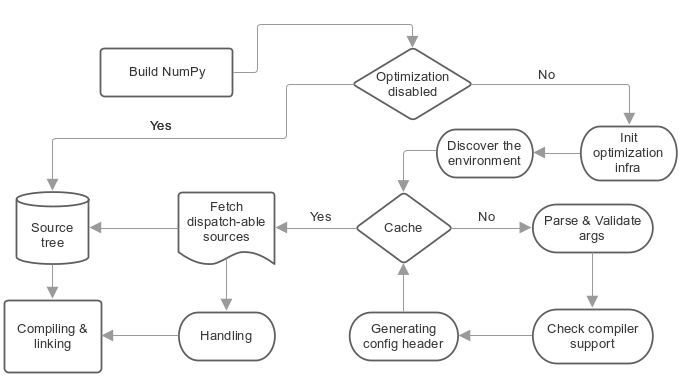

Как работает диспетчер ЦП? #
Диспетчер NumPy использует многовариантную компиляцию исходного кода: один и тот же исходный файл компилируется несколько раз с разными флагами компилятора и определениями препроцессора C, влияющими на выбор ветвей кода. Так для каждого объектного файла включаются определённые наборы инструкций согласно требуемой оптимизации, после чего полученные файлы связываются вместе.

Подписи на рисунке: Build NumPy — сборка NumPy; Optimization disabled — оптимизация отключена; Yes / No — да / нет; Init optimization infra — инициализация инфраструктуры оптимизации; Discover the environment — определение окружения; Cache — кэш; Parse & Validate args — разбор и проверка аргументов; Check compiler support — проверка возможностей компилятора; Generating config header — создание заголовочного файла конфигурации; Fetch dispatch-able sources — получение исходных файлов с диспетчеризацией; Handling — обработка; Source tree — дерево исходного кода; Compiling & linking — компиляция и компоновка.Этот механизм должен поддерживать все компиляторы и не требует расширений, специфичных для компилятора. Однако он добавляет к обычной компиляции несколько шагов, описанных далее.
1. Конфигурация#
Настройка пользователем необходимой оптимизации перед началом сборки исходных файлов с помощью двух аргументов команды, как описано выше:
--cpu-baseline: минимальный набор необходимых оптимизаций.--cpu-dispatch: набор дополнительных оптимизаций с выбором реализации во время выполнения.
2 — Определение окружения#
Здесь мы проверяем компилятор и архитектуру платформы и кешируем часть промежуточных результатов, чтобы ускорить повторную сборку.
3- Проверка запрашиваемых оптимизаций #
Проверяя их с помощью компилятора и определяя, какие запрошенные оптимизации он поддерживает.
4 — Генерация основного заголовочного файла конфигурации#
Сгенерированный заголовок _cpu_dispatch.h содержит все определения и заголовки наборов инструкций для требуемых оптимизаций, которые были проверены на предыдущем этапе.
Также содержит дополнительные определения C для задания атрибутов модуля NumPy на уровне Python: __cpu_baseline__ и __cpu_dispatch__.
Что в этом заголовке?
Заголовок примера был динамически создан gcc на компьютере X86. Компилятор поддерживает --cpu-baseline="sse sse2 sse3" и --cpu-dispatch="ssse3 sse41", результат приведен ниже.
// The header should be located at numpy/numpy/_core/src/common/_cpu_dispatch.h
/**NOTE
** C definitions prefixed with "NPY_HAVE_" represent
** the required optimizations.
**
** C definitions prefixed with 'NPY__CPU_TARGET_' are protected and
** shouldn't be used by any NumPy C sources.
*/
/******* baseline features *******/
/** SSE **/
#define NPY_HAVE_SSE 1
#include <xmmintrin.h>
/** SSE2 **/
#define NPY_HAVE_SSE2 1
#include <emmintrin.h>
/** SSE3 **/
#define NPY_HAVE_SSE3 1
#include <pmmintrin.h>
/******* dispatch-able features *******/
#ifdef NPY__CPU_TARGET_SSSE3
/** SSSE3 **/
#define NPY_HAVE_SSSE3 1
#include <tmmintrin.h>
#endif
#ifdef NPY__CPU_TARGET_SSE41
/** SSE41 **/
#define NPY_HAVE_SSE41 1
#include <smmintrin.h>
#endif
Комментарии к примеру на русском
- Заголовок должен находиться в numpy/numpy/_core/src/common/_cpu_dispatch.h
- ПРИМЕЧАНИЕ. Определения C с префиксом NPY_HAVE_ обозначают требуемые оптимизации. Определения с префиксом NPY__CPU_TARGET_ защищены и не должны использоваться в исходных файлах C NumPy.
- ***** базовые возможности ******
- SSE *
- SSE2 *
- SSE3 *
- ***** возможности с выбором реализации во время выполнения ******
- SSSE3 *
- SSE41 *
Базовые возможности — минимальный набор обязательных оптимизаций, настраиваемый через --cpu-baseline. Они не защищены условиями препроцессора и всегда включены, поэтому их можно использовать в любом исходном файле.
Значит ли это, что инфраструктура NumPy передаёт флаги компилятора для базового набора возможностей при сборке всех исходных файлов?
Да. Однако исходные файлы с диспетчеризацией обрабатываются иначе.
Что произойдёт, если при сборке пользователь укажет определённые базовые возможности, но во время выполнения компьютер не будет поддерживать даже их? Будет ли скомпилированный код вызван через одно из этих определений? Или компилятор сам автоматически сгенерирует либо векторизует какой-то фрагмент кода на основе переданных ему флагов командной строки?
При загрузке модуля NumPy выполняется проверка, выявляющая такое поведение. Она вызывает ошибку времени выполнения Python, чтобы сообщить о проблеме пользователю и предотвратить выполнение процессором недопустимой инструкции, которое привело бы к ошибке сегментации.
Возможности, выбираемые диспетчеризацией, — набор дополнительных оптимизаций, настроенных через --cpu-dispatch. Они не активируются по умолчанию и всегда защищены другими определениями C с префиксом NPY__CPU_TARGET_. Определения C NPY__CPU_TARGET_ включаются только в исходных файлах с диспетчеризацией.
5. Исходные файлы с диспетчеризацией и директивы конфигурации#
Исходные файлы с диспетчеризацией — это специальные файлы на языке C, которые можно компилировать несколько раз с разными флагами компилятора и разными определениями препроцессора C. Они влияют на выбор вариантов кода, чтобы включить определённые наборы инструкций для каждого скомпилированного объектного файла согласно инструкциям конфигурации. Эти инструкции необходимо разместить в комментарии языка C (/**/) в начале каждого исходного файла с диспетчеризацией; они должны начинаться со специальной метки @targets. Такие файлы обрабатываются как обычные исходные файлы на языке C, если оптимизация отключена аргументом командной строки --disable-optimization.
Что такое операторы конфигурации?
Инструкции конфигурации — это сочетания ключевых слов, задающие необходимые оптимизации для исходного файла с поддержкой диспетчеризации.
Пример:
/*@targets avx2 avx512f vsx2 vsx3 asimd asimdhp */
// C code
Комментарии к примеру на русском
- @targets avx2 avx512f vsx2 vsx3 asimd asimdhp
- Код на C
Ключевые слова в основном представляют собой дополнительные оптимизации, настроенные с помощью --cpu-dispatch, но они также могут обозначать и другие параметры, такие как:
Целевые группы — заранее заданные директивы конфигурации для управления необходимыми оптимизациями вне исходного файла с диспетчеризацией.
Политики — наборы параметров, меняющих поведение по умолчанию или предписывающих компиляторам определённые действия.
«baseline»: специальное ключевое слово, обозначающее минимальный набор оптимизаций, настроенный через
--cpu-baseline
Инфраструктура NumPy обрабатывает исходные файлы с диспетчеризацией в четыре этапа:
(A) Распознавание: как и для шаблонов исходного кода и F2PY, файлы с диспетчеризацией помечаются специальным расширением:
*.dispatch.cдля C и*.dispatch.cppили*.dispatch.cxxдля C++. ПРИМЕЧАНИЕ: C++ пока не поддерживается.(B) Разбор и проверка: на этом этапе исходные файлы с поддержкой диспетчеризации, отобранные на предыдущем шаге, по очереди разбираются и проверяются на основе их инструкций конфигурации, чтобы определить необходимые оптимизации.
Обёртки на C: этот подход используется инфраструктурой NumPy. Он оказался достаточно гибким, чтобы компилировать один исходный файл несколько раз с разными определениями C и флагами, влияющими на пути выполнения кода. Для каждого требуемого варианта дополнительной оптимизации создаётся временный исходный файл на C. Он содержит соответствующие определения C и подключает исходный файл директивой языка C #include. Для наглядности рассмотрим следующий код для AVX512F:
/* * this definition is used by NumPy utilities as suffixes for the * exported symbols */ #define NPY__CPU_TARGET_CURRENT AVX512F /* * The following definitions enable * definitions of the dispatch-able features that are defined within the main * configuration header. These are definitions for the implied features. */ #define NPY__CPU_TARGET_SSE #define NPY__CPU_TARGET_SSE2 #define NPY__CPU_TARGET_SSE3 #define NPY__CPU_TARGET_SSSE3 #define NPY__CPU_TARGET_SSE41 #define NPY__CPU_TARGET_POPCNT #define NPY__CPU_TARGET_SSE42 #define NPY__CPU_TARGET_AVX #define NPY__CPU_TARGET_F16C #define NPY__CPU_TARGET_FMA3 #define NPY__CPU_TARGET_AVX2 #define NPY__CPU_TARGET_AVX512F // our dispatch-able source #include "/the/absolute/path/of/hello.dispatch.c"
Комментарии к примеру на русском
- Утилиты NumPy используют это определение как суффикс экспортируемых символов
- Следующие определения включают в основном конфигурационном заголовке возможности, доступные для выбора реализации. Это определения подразумеваемых возможностей.
- Наш исходный файл с выбором реализации
(D) Заголовок конфигурации диспетчеризации: инфраструктура генерирует конфигурационный заголовок для каждого исходного файла, поддерживающего диспетчеризацию. В основном он содержит два абстрактных макроса C для идентификации сгенерированных объектов. Это позволяет любому исходному файлу C во время выполнения выбирать определённые символы из этих объектов. Заголовок также используется для предварительных объявлений.
Имя сгенерированного заголовочного файла получается из имени исходного файла с диспетчеризацией путём замены расширения на
.h. Например, предположим, что исходный файл с диспетчеризацией называетсяhello.dispatch.cи содержит следующее:// hello.dispatch.c /*@targets baseline sse42 avx512f */ #include <stdio.h> #include "numpy/utils.h" // NPY_CAT, NPY_TOSTR #ifndef NPY__CPU_TARGET_CURRENT // wrapping the dispatch-able source only happens to the additional optimizations // but if the keyword 'baseline' provided within the configuration statements, // the infrastructure will add extra compiling for the dispatch-able source by // passing it as-is to the compiler without any changes. #define CURRENT_TARGET(X) X #define NPY__CPU_TARGET_CURRENT baseline // for printing only #else // since we reach to this point, that's mean we're dealing with // the additional optimizations, so it could be SSE42 or AVX512F #define CURRENT_TARGET(X) NPY_CAT(NPY_CAT(X, _), NPY__CPU_TARGET_CURRENT) #endif // Macro 'CURRENT_TARGET' adding the current target as suffix to the exported symbols, // to avoid linking duplications, NumPy already has a macro called // 'NPY_CPU_DISPATCH_CURFX' similar to it, located at // numpy/numpy/_core/src/common/npy_cpu_dispatch.h // NOTE: we tend to not adding suffixes to the baseline exported symbols void CURRENT_TARGET(simd_whoami)(const char *extra_info) { printf("I'm " NPY_TOSTR(NPY__CPU_TARGET_CURRENT) ", %s\n", extra_info); }
Комментарии к примеру на русском
- hello.dispatch.c
- @targets baseline sse42 avx512f
- NPY_CAT, NPY_TOSTR
- Обёртка исходного файла создаётся только для дополнительных оптимизаций;
- но если в директивах конфигурации указано ключевое слово baseline,
- инфраструктура дополнительно компилирует этот исходный файл,
- передавая его компилятору как есть, без изменений.
- Только для вывода
- Если выполнение дошло сюда, значит, используются
- дополнительные оптимизации: SSE42 или AVX512F.
- Макрос CURRENT_TARGET добавляет текущую целевую платформу как суффикс экспортируемых символов,
- чтобы избежать повторных определений при компоновке. В NumPy уже есть похожий макрос
- NPY_CPU_DISPATCH_CURFX, расположенный в
- numpy/numpy/_core/src/common/npy_cpu_dispatch.h
- ПРИМЕЧАНИЕ: к экспортируемым символам базовой реализации суффиксы обычно не добавляются
Предположим, вы добавили hello.dispatch.c в дерево исходного кода. Инфраструктура должна создать временный заголовок конфигурации hello.dispatch.h, доступный любому исходному файлу в дереве и содержащий следующий код:
#ifndef NPY__CPU_DISPATCH_EXPAND_ // To expand the macro calls in this header #define NPY__CPU_DISPATCH_EXPAND_(X) X #endif // Undefining the following macros, due to the possibility of including config headers // multiple times within the same source and since each config header represents // different required optimizations according to the specified configuration // statements in the dispatch-able source that derived from it. #undef NPY__CPU_DISPATCH_BASELINE_CALL #undef NPY__CPU_DISPATCH_CALL // nothing strange here, just a normal preprocessor callback // enabled only if 'baseline' specified within the configuration statements #define NPY__CPU_DISPATCH_BASELINE_CALL(CB, ...) \ NPY__CPU_DISPATCH_EXPAND_(CB(__VA_ARGS__)) // 'NPY__CPU_DISPATCH_CALL' is an abstract macro is used for dispatching // the required optimizations that specified within the configuration statements. // // @param CHK, Expected a macro that can be used to detect CPU features // in runtime, which takes a CPU feature name without string quotes and // returns the testing result in a shape of boolean value. // NumPy already has macro called "NPY_CPU_HAVE", which fits this requirement. // // @param CB, a callback macro that expected to be called multiple times depending // on the required optimizations, the callback should receive the following arguments: // 1- The pending calls of @param CHK filled up with the required CPU features, // that need to be tested first in runtime before executing call belong to // the compiled object. // 2- The required optimization name, same as in 'NPY__CPU_TARGET_CURRENT' // 3- Extra arguments in the macro itself // // By default the callback calls are sorted depending on the highest interest // unless the policy "$keep_sort" was in place within the configuration statements // see "Dive into the CPU dispatcher" for more clarification. #define NPY__CPU_DISPATCH_CALL(CHK, CB, ...) \ NPY__CPU_DISPATCH_EXPAND_(CB((CHK(AVX512F)), AVX512F, __VA_ARGS__)) \ NPY__CPU_DISPATCH_EXPAND_(CB((CHK(SSE)&&CHK(SSE2)&&CHK(SSE3)&&CHK(SSSE3)&&CHK(SSE41)), SSE41, __VA_ARGS__))
Комментарии к примеру на русском
- Для раскрытия вызовов макросов в этом заголовке
- Отменяем следующие определения макросов, поскольку конфигурационные заголовки
- могут подключаться несколько раз в одном исходном файле, а каждый такой заголовок задаёт
- свой набор необходимых оптимизаций согласно директивам конфигурации
- исходного файла, на основе которого он был создан.
- Здесь ничего необычного: обычный обратный вызов препроцессора
- Включается только при наличии baseline в директивах конфигурации
- NPY__CPU_DISPATCH_CALL — абстрактный макрос выбора
- требуемых оптимизаций, указанных в директивах конфигурации.
- @param CHK: ожидается макрос проверки возможностей процессора
- во время выполнения; он принимает имя возможности без кавычек и
- возвращает логический результат проверки.
- В NumPy уже есть подходящий макрос NPY_CPU_HAVE.
- @param CB: макрос обратного вызова, вызываемый несколько раз в зависимости
- от требуемых оптимизаций. Он должен принимать следующие аргументы:
- 1. Подготовленные вызовы @param CHK с необходимыми возможностями процессора,
- которые нужно проверить во время выполнения перед вызовом функции
- из скомпилированного объектного файла.
- 2. Имя требуемой оптимизации, совпадающее с NPY__CPU_TARGET_CURRENT
- 3. Дополнительные аргументы самого макроса
- По умолчанию обратные вызовы упорядочены по убыванию приоритета оптимизаций,
- если в директивах конфигурации не задана политика $keep_sort.
- Подробнее см. раздел «Устройство диспетчера процессорных реализаций».
Пример использования заголовка конфигурирования в свете вышесказанного:
// NOTE: The following macros are only defined for demonstration purposes only. // NumPy already has a collections of macros located at // numpy/numpy/_core/src/common/npy_cpu_dispatch.h, that covers all dispatching // and declarations scenarios. #include "numpy/npy_cpu_features.h" // NPY_CPU_HAVE #include "numpy/utils.h" // NPY_CAT, NPY_EXPAND // An example for setting a macro that calls all the exported symbols at once // after checking if they're supported by the running machine. #define DISPATCH_CALL_ALL(FN, ARGS) \ NPY__CPU_DISPATCH_CALL(NPY_CPU_HAVE, DISPATCH_CALL_ALL_CB, FN, ARGS) \ NPY__CPU_DISPATCH_BASELINE_CALL(DISPATCH_CALL_BASELINE_ALL_CB, FN, ARGS) // The preprocessor callbacks. // The same suffixes as we define it in the dispatch-able source. #define DISPATCH_CALL_ALL_CB(CHECK, TARGET_NAME, FN, ARGS) \ if (CHECK) { NPY_CAT(NPY_CAT(FN, _), TARGET_NAME) ARGS; } #define DISPATCH_CALL_BASELINE_ALL_CB(FN, ARGS) \ FN NPY_EXPAND(ARGS); // An example for setting a macro that calls the exported symbols of highest // interest optimization, after checking if they're supported by the running machine. #define DISPATCH_CALL_HIGH(FN, ARGS) \ if (0) {} \ NPY__CPU_DISPATCH_CALL(NPY_CPU_HAVE, DISPATCH_CALL_HIGH_CB, FN, ARGS) \ NPY__CPU_DISPATCH_BASELINE_CALL(DISPATCH_CALL_BASELINE_HIGH_CB, FN, ARGS) // The preprocessor callbacks // The same suffixes as we define it in the dispatch-able source. #define DISPATCH_CALL_HIGH_CB(CHECK, TARGET_NAME, FN, ARGS) \ else if (CHECK) { NPY_CAT(NPY_CAT(FN, _), TARGET_NAME) ARGS; } #define DISPATCH_CALL_BASELINE_HIGH_CB(FN, ARGS) \ else { FN NPY_EXPAND(ARGS); } // NumPy has a macro called 'NPY_CPU_DISPATCH_DECLARE' can be used // for forward declarations any kind of prototypes based on // 'NPY__CPU_DISPATCH_CALL' and 'NPY__CPU_DISPATCH_BASELINE_CALL'. // However in this example, we just handle it manually. void simd_whoami(const char *extra_info); void simd_whoami_AVX512F(const char *extra_info); void simd_whoami_SSE41(const char *extra_info); void trigger_me(void) { // bring the auto-generated config header // which contains config macros 'NPY__CPU_DISPATCH_CALL' and // 'NPY__CPU_DISPATCH_BASELINE_CALL'. // it is highly recommended to include the config header before executing // the dispatching macros in case if there's another header in the scope. #include "hello.dispatch.h" DISPATCH_CALL_ALL(simd_whoami, ("all")) DISPATCH_CALL_HIGH(simd_whoami, ("the highest interest")) // An example of including multiple config headers in the same source // #include "hello2.dispatch.h" // DISPATCH_CALL_HIGH(another_function, ("the highest interest")) }
Комментарии к примеру на русском
- ПРИМЕЧАНИЕ: следующие макросы приведены только для демонстрации.
- В NumPy уже есть набор макросов в
- numpy/numpy/_core/src/common/npy_cpu_dispatch.h, охватывающий все варианты выбора реализаций
- и объявлений.
- NPY_CPU_HAVE
- NPY_CAT, NPY_EXPAND
- Пример макроса, вызывающего все экспортируемые символы
- после проверки их поддержки на текущем компьютере.
- Обратные вызовы препроцессора.
- Те же суффиксы, что определены в исходном файле с выбором реализации.
- Пример макроса, вызывающего экспортируемые символы оптимизации с наивысшим
- приоритетом после проверки её поддержки на текущем компьютере.
- Обратные вызовы препроцессора
- В NumPy есть макрос NPY_CPU_DISPATCH_DECLARE для
- предварительного объявления любых прототипов на основе
- NPY__CPU_DISPATCH_CALL и NPY__CPU_DISPATCH_BASELINE_CALL.
- Однако в этом примере объявления записаны вручную.
- Подключаем автоматически созданный конфигурационный заголовок,
- содержащий макросы конфигурации NPY__CPU_DISPATCH_CALL и
- NPY__CPU_DISPATCH_BASELINE_CALL.
- Настоятельно рекомендуется подключать конфигурационный заголовок перед вызовом
- макросов выбора реализации, если в этой области видимости есть другой такой заголовок.
- Пример подключения нескольких конфигурационных заголовков в одном исходном файле
- #include "hello2.dispatch.h"
- DISPATCH_CALL_HIGH(another_function, ("the highest interest"))